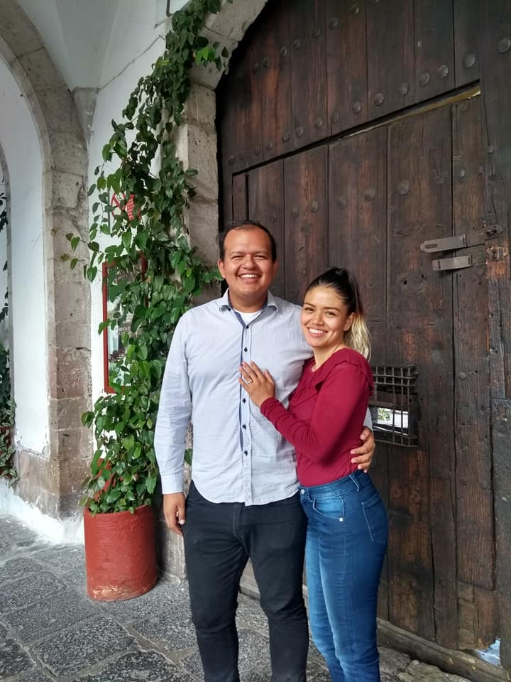

Para nosotros es un placer que nos acompañe en este gran momento, Nuestra boda¡:

Horario de actividades
| |
Horario |
Lugar |
| Ceremonia civil |
12:00 AM |
Registro Civil Tultilan |
| Ceremonia religiosa |
03:00 PM |
Templo de la ciudad de mexico, Aragon |
| Recepcion |
08:00 PM |
Salon de eventos "Quinta las Aguilas" |
Algunas recomendaciones de vestimenta:
Para la boda en el civil, se recomienda usar ropa casual-formal,
se invita a las mujeres a evitar usar color blanco y color guinda
En la ceremonia religiosa y la recepcion, se recomienda usar ropa formal y vestidos de noche,
tambien se invita a las mujeres a evitar el color blanco y el color guinda